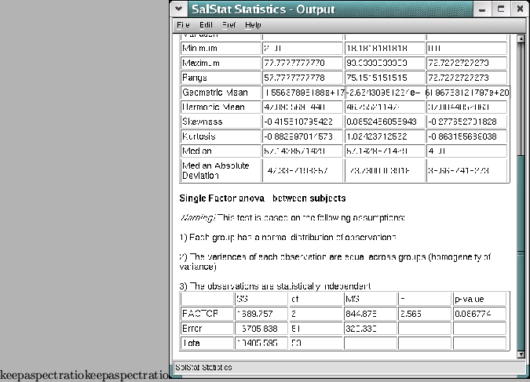

The output is in html format - this is the format used for web pages, and your results can be opened in any web browser and most word processors to be edited. It is displayed in the output sheet - the window with the large space saying ``SalStat Statistics''.

The output of SalStat
When you have done some analysis, the results will all appear there. If you wish to save the results, click on the menu ``File'' -> ``Save As...'', and a dialog will appear allowing you to enter a filename.